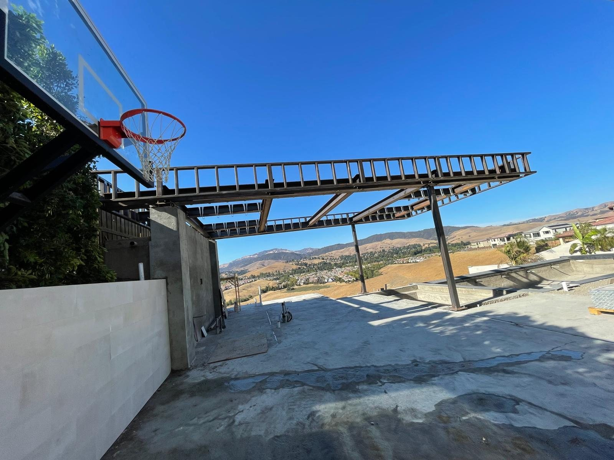

"It was a pleasure to work with Ismael on my project. I designed a center support pole for a set of circular stairs that required flanges placed with considerable precision and welded in place. I was totally satisfied with the finished product; it more than met my expectations and made the construction of the stairs very easy."

Testimonials
Actual customer reviews for Production Welding.
Read verified public review snippets from customers who hired Production Welding for welding, repair, and fabrication work.
"Needed a welding job done on short notice and this business was able to accommodate me. They did a fantastic job!"
"Used the welder and was amazed by the quality of work and friendly service. Mine did the job perfectly I highly recommend them for all your welding needs! thank you."
"I recently used this welder and was blown away by the quality of work and the friendly service. I highly recommend them for all your welding needs!"
"Im very Satisfied! with the great and fast service. Ismael is very personal and knowledgeable. 100% recommend to who ever needs a great Professional Welder."
"Ismael came out very quickly and on a Saturday. I was amazed that he came out to the ranch right away. Did a small repair on a tractor at a very reasonable price. Was friendly and professional. Hate to say it but I can't wait to use him again."
"I own a small manufacturing firm that consists of old equipment that needs welding repairs from time to time. I have worked with these guys for the past months and they have done nothing but satisfy me with their quality welding service. My old equipment now runs like they were bought yesterday and I am planning to have more of them repaired soon. Thanks!"
More Reviews
Customer feedback helps local homeowners and contractors choose the right welder.
After each completed job, Production Welding welcomes honest Google reviews about the service, communication, project type, and finished weld work.
Get a Welding Estimate
Need a certified, insured welder for mobile or shop work?
Call Production Welding or send the project details, location, photos, and timing. Mobile service and shop work are available across the Bay Area.